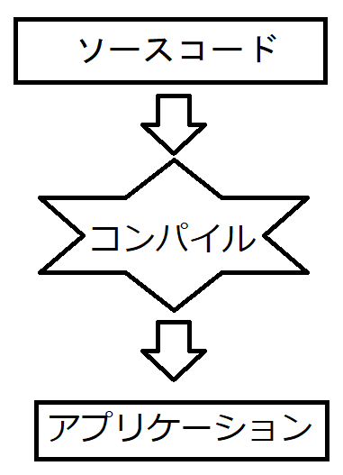

C言語とはC言語(しーげんご)は1972年のアメリカで開発されたプログラミング言語です。この言語は、C++などのプログラミング言語のベースになっています。 業界に普及している言語の１つです。 使用用途C言語は、電子機器内部で動作しているプログラムに使用されることが多いです。C++になると、Windowsアプリケーションの開発にも使用されるようになります。 ソースコードとコンパイルC言語はプログラムを記述するだけでは動きません。記述したプログラムを動かすには、記述した人間が理解できる言葉を コンピュータが理解できる言葉に変換する作業が必要になります。 人間が理解できる言葉で記述したものを「ソースコード」といい、 ソースコードを保存したファイルのことを「ソースファイル」と呼びます。 この変換する作業を「コンパイル」と呼びます。  |
|
当Webサイトに記載されている内容は、筆者が独自に調査・研究した内容をまとめています。 そのため、記載されている内容によっては、 いかなる損害が発生したとしても、筆者は責任を負いかねますのでご了承ください。 |